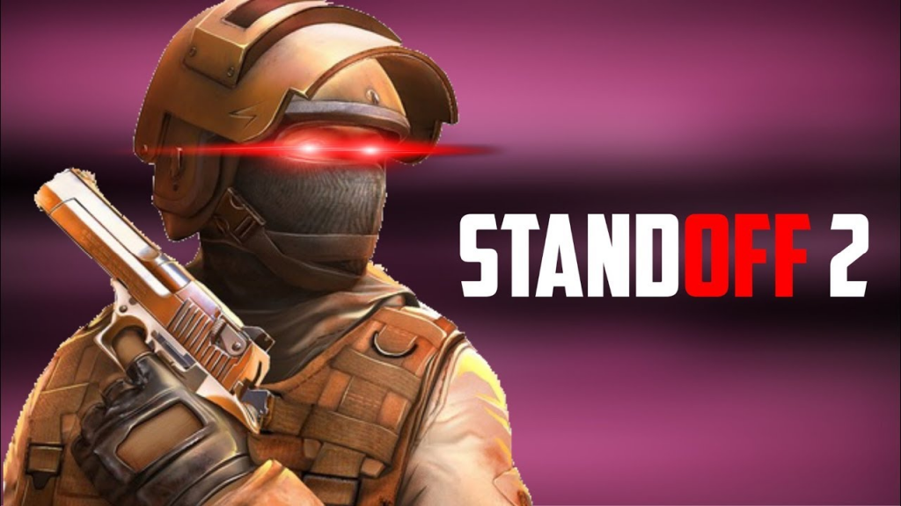

Основне про Standoff 2
Standoff 2 являє собою класичний шутер від першої особи з різними режимами гри та арсеналом сучасної російської та іноземної зброї. Кожна зброя має різний набір характеристик, що обмежують тактичні можливості гравця: пробивність броні, віддача, темп стрільби, ціна, нагорода за вбивство, боєзапас.
Ранги
| BRONZE | SILVER | GOLD |
| Bronze l – одна бронзова личка; | Silver l – 1 срібна личка, ММР від 591 до 710 ММР; | Gold l – золота зірка, 1051-1155 ММР; |
| Bronze ll – дві бронзові лички; | Silver ll – дві лички срібного кольору, 711-825 ММР; | GGold ll – дві золоті зірки, від 1156 до 1250 ММР; |
| Bronze lll – три лички бронзові лички; | Silver lll - 3 срібні лички, 826-940 ММР; | Gold lll – три золотые звезды, 1251-1350 ММР; |
| Bronze lV – чотири бронзові лички; | Silver lV - 4 лички, від 941 до 1050 ММР; | Gold lV – чотири зірки золотого кольору, 1351-1440 ММР; |